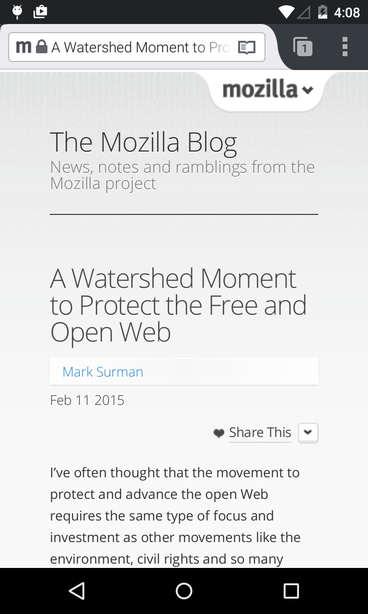
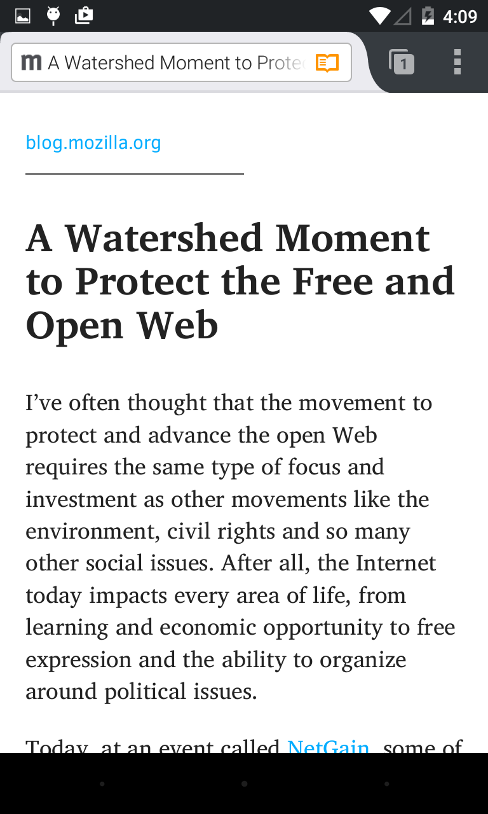

Simplifying Async JS with the Power of `yield`
Simplifying Async JS with the Power of yield
Developing the Firefox UI
- Web technologies
- Privleged JS APIs
- JS only needs to work in the latest version of Firefox ☺
What I'm going to talk about tonight
- JS callbacks and their downsides
- Promises, generators, and task.js
- Example of how we use these tools for Firefox Reader Mode
Firefox Reader Mode


Firefox Reader Mode
- Stripped-down view of web content
- Implemented a few years ago for Android
- Recently refactored to work on desktop as well
JavaScript is event-driven
- We want non-blocking I/O
- HTTP requests
- Database operations
- Disk reads/writes
- But JS is single-threaded
- Solution: callback functions and the event loop
The event loop
- Queue of messages with associated callback functions
- Messages queued in response to external events
- Each poll of the queue is referred to as a "tick"
- Polling pauses while each callback runs
More details at blog.carbonfive.com
Callback function
request('http://www.google.com', function(error, res, body) {
console.log(body);
});
console.log('Done!');
Code from blog.carbonfive.com
Callback hell
fs.readdir(source, function(err, files) {
if (err) {
console.log('Error finding files: ' + err)
} else {
files.forEach(function(filename, fileIndex) {
console.log(filename)
gm(source + filename).size(function(err, values) {
if (err) {
console.log('Error identifying file size: ' + err)
} else {
console.log(filename + ' : ' + values)
aspect = (values.width / values.height)
widths.forEach(function(width, widthIndex) {
height = Math.round(width / aspect)
console.log('resizing ' + filename + 'to ' + height + 'x' + height)
this.resize(width, height).write(destination + 'w' + width + '_' + filename, function(err) {
if (err) console.log('Error writing file: ' + err)
})
}.bind(this))
}
})
})
}
})
Code from callbackhell.com
Problems with callbacks
- Error handling is cumbersome
- Race conditions
- Hard to reason about code
Example: Reader Mode with callbacks
var url = "http://foo.com/someArticle.html";
getArticle(url, function(article) {
// Fill in a pretty article view
});
getArticle
- Check if article is in cache
- Download document if necessary
- Parse document in a worker
- Store article in cache
function getArticle(url, callback) {
getArticleFromCache(url, (article) => {
if (article) {
callback(article);
return;
}
downloadDocument(url, (doc) => {
parseDocument(doc, (article) => {
storeArticleInCache(url, article);
callback(article);
});
});
});
}
See original at hg.mozilla.org
function downloadDocument(url, callback) {
var xhr = new XMLHttpRequest();
xhr.open("GET", url, true);
xhr.onerror = (event) => reject(event.error);
xhr.responseType = "document";
xhr.onload = (event) => {
if (xhr.status !== 200) {
callback(null);
return;
}
var doc = xhr.responseXML;
callback(doc);
}
xhr.send();
}
function parseDocument(doc, callback) {
var worker = new Worker("readerWorker.js");
worker.onmessage = (event) => {
var article = event.data;
callback(article);
};
worker.onerror = (event) => callback(null);
worker.postMessage({
uri: { ... },
doc: new XMLSerializer().serializeToString(doc)
});
}
Real world problems
- Inconsistent error handling
- Redundant logic in different functions
- Implicit state makes functions hard to repurpose
- Hard to write unit tests
By the end of this talk, we're going to fix this!
ES6 Lesson Time: Promises
Promises
- Objects that represent a future value (i.e. a promised value)
- Promises can be "pending", "fulfilled" or "rejected"
- Methods to handle fulfillment/rejection
- Promises can also be chained together
Reference at developer.mozilla.org
var p = new Promise(function(resolve, reject) {
var success = doSomething();
if (success) {
resolve("Success!");
} else {
reject("Error!");
}
});
p.then((value) => {
console.log(value); // Success!
}, (reason) => {
console.log(reason); // Error!
});
p.catch((reason) => {
console.log(reason); // Error!
});
var p = new Promise(function(resolve, reject) {
resolve(1);
});
p.then((val) => {
console.log(val); // 1
return val + 2;
}).then((val) => {
console.log(val); // 3
});
Code from html5rocks.com
Example: Reader Mode with promises
function downloadDocument(url) {
return new Promise((resolve, reject) => {
var xhr = new XMLHttpRequest();
xhr.open("GET", url, true);
xhr.onerror = (event) => reject(event.error);
xhr.responseType = "document";
xhr.onload = (event) => {
if (xhr.status !== 200) {
reject("XHR failed with status: " + xhr.status);
return;
}
var doc = xhr.responseXML;
resolve(doc);
}
xhr.send();
});
}
function parseDocument(doc) {
return new Promise((resolve, reject) => {
var worker = new Worker("readerWorker.js");
worker.onmessage = function (event) {
var article = event.data;
resolve(article);
};
worker.onerror = (event) => reject(event.message);
worker.postMessage({
uri: { ... },
doc: new XMLSerializer().serializeToString(doc)
});
});
}
function getArticle(url) {
return getArticleFromCache(url).then((article) => {
if (article) {
return article;
}
return downloadDocument(url)
.then(parseDocument)
.then((article) => {
storeArticleInCache(url, article);
return article;
});
});
}
ES6 Lesson Time: Generators
Generators
- Functions whose execution can be paused
- When paused, all runtime state is maintained
- Execution will pause at
yield statements
Reference at developer.mozilla.org
Iterators
- Calling a generator function returns an iterator
- Iterator has a
next() method
next() returns an object with value and done properties
next() also lets you send values back into the generator
Reference at developer.mozilla.org
function* foo() {
var index = 0;
while(true) {
yield index++;
}
}
var it = foo();
it.next(); // { value: 0, done: false }
it.next(); // { value: 1, done: false }
it.next(); // { value: 2, done: false }
function* foo(x) {
yield x + 1;
var y = yield;
return x + y;
}
var it = foo(5);
it.next(); // { value: 6, done: false }
it.next(); // { value: undefined, done: false }
it.next(2); // { value: 7, done: true }
task.js
- "Tasks" are essentially generators that emit promises
- We use
yield to block on promise resolution
- Abstracts away iterating through generators
Original library at taskjs.org
Task.spawn()
- Takes a generator function and starts running it immediately
- When the generator yields a promise, waits for that promise to be fulfilled before resuming the generator
- Returns a promise that is resolved when the task is complete
Task.spawn(function* () {
var result = yield promiseSomeValue();
for (var i = 0; i < 3; i++) {
result += yield promiseAnotherValue();
}
return result;
}).then(function (result) {
console.log(result);
}, function (exception) {
console.error(exception);
});
Code from hg.mozilla.org
Task.async()
- Convenience function for defining a function that starts a task
- Returns an "async" function that starts a new task
var greeter = {
msg: "Hello, NAME!",
greet: Task.async(function* (name) {
return yield sendGreeting(this.msg.replace(/NAME/, name));
})
};
greeter.greet("Margaret").then(...);
Code from hg.mozilla.org
Example: Reader mode with tasks
var getArticle = Task.async(function* (url) {
var article = yield getArticleFromCache(url);
if (article) {
return article;
}
var doc = yield downloadDocument(url);
var article = yield parseDocument(doc);
storeArticleInCache(url, article);
return article;
});
See original at hg.mozilla.org
var url = "http://foo.com/someArticle.html";
getArticle(url).then((article) => {
// Fill in a pretty article view
}, (error) => {
// Handle an error!
});
Unit testing with tasks
- Tests can run asynchronously
- Easier to check intermediary state
- Easier to verify test logic
add_task(function* test() {
var result = yield Promise.resolve(true);
do_check_true(result);
var secondary = yield someFunctionThatReturnsAPromise(result);
do_check_eq(secondary, "expected value");
});
See original at hg.mozilla.org
add_task(function* test_parse_articles() {
for (var testcase of TEST_PAGES) {
var article = yield getArticle(testcase.url);
checkArticle(article, testcase);
}
});
See original at hg.mozilla.org
Benefits of tasks
- Increased modularity
- Unit-test-ability
- Error propagation
- Code readability